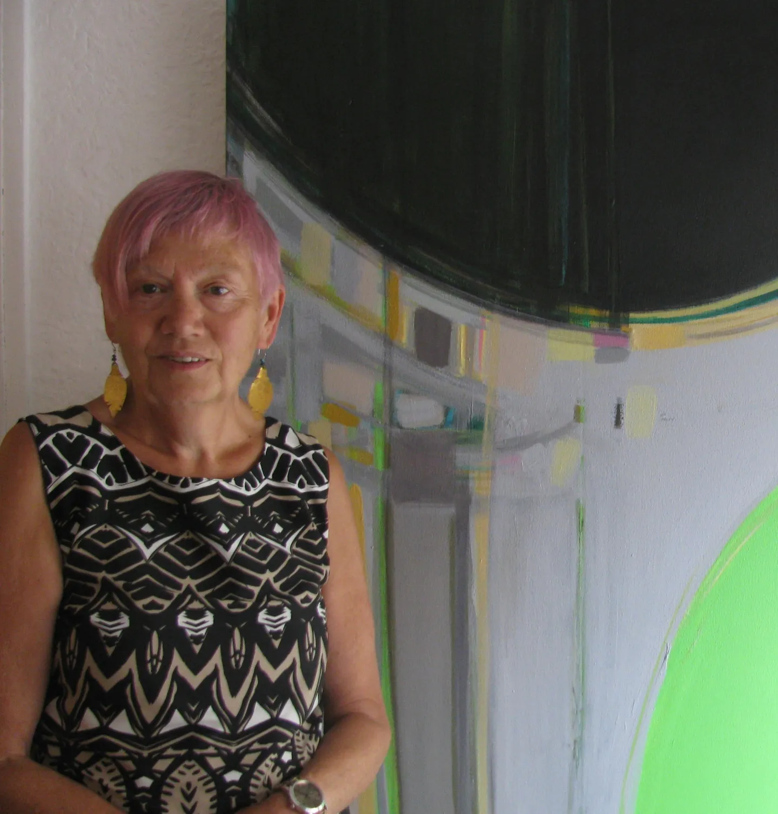

North Dorset has been my home for many years, the river Stour, the brooks, the trees, the greenness, the poetry, all are strong influences on my work.
Much of it is driven by the energy and tension experienced in frequent field edge, crop line, walking through the changing seasons; exploring the power of growth in the face of uncertain and fluctuating weather conditions.
Interlinked fields, ditches, wild edges, long grass, troubled skies, uneven ground, crop vistas.
I am inspired by this particular landscape, but I am also interested in that hinterland where that landscape meets manmade intervention. The casual juxtaposition of discarded debris, washed up on beaches, scattered through fields or littering verges.
a beaten track through grass – a weed against a wall
a blade pierces calm waters – a stillness at the edge
solar panels in a field – a concrete bridge – a worn brick wall
plastic shards on beach and in field
An interest in words and written language has led me to employ text in both my painting and my drawing, the flow of handwriting adding a tonal, textural element, the significant words used, though overlaid and intentionally illegible, resonate as potential parallel communication.
Colour is pivotal in all my work, I particularly like to contrast neutral against saturated colour, translucent washes against dense opaque layers, building up depth and intensity in this way.
Each piece of work starts with an idea and a gestural mark triggered by memory and develops its own character and identity, always a balance between ‘formal visual language’ and expressive energy.
Curriculum Vitae
| 2006-07 | MA Fine Art | Arts University, Bournemouth |
| 1974-75 | PGCE | Goldsmiths College, University of London |
| 1970-74 | BA Hons Fine Art | University of Reading |
Selected Solo Exhibitions
| 2014 | Beyond Green | The Slade Centre, Gillingham |
| 2012 | Artist of the Month | Blandford Museum |
| 2011 | The Fat Fowl | Bradford-on-Avon |
| 2011 | Pythouse Walled Garden | |
Selected Group Exhibitions
| 2025 | Inaugural Dorset Open | Dorset Museum and Art Gallery, Dorchester | |
| 2025 | In Our Nature | DVA | Fine Foundation Gallery, Durlston Country Park, Swanage |
| 2025 | BIOPHILIA | DVA/Arborealists | Dorset County Hospital (June/July travelling to Bath Royal United Hospital July) |
| 2025 | PRINT OPEN | The Slade Centre, Gillingham | |
| 2025 | RWA Artist's Network | Work selected | RWA, Bristol |
| 2024 | OPEN | The Slade Centre, Gillingham | |
| 2024 | BIZARRE BAZARRE | WESCA show | Shaftesbury Arts Centre |
| 2024 | Open Studio | Dorset Art Weeks | |
| 2023 | PRINT OPEN | The Slade Centre, Gillingham | |
| 2023 | OPEN | ATKINSON GALLERY, Millfield | |
| 2023 | RWA Artist Network | Work selected | RWA, Bristol |
| 2022 | OUT OF THE DARK | WESCA | 2 West Walks, Dorchester |
| 2022 | Open Studio | Dorset Art Weeks | |
| 2022 | PRINTS | Invited artists | The Slade Centre, Gillingham |
| 2021 | COPING | Group show | Guggleton Farm Arts |
| 2021 | Longlisted for Trinity Buoy Wharf Drawing Prize | ||
| 2021 | Millfield Open show – selected mixed media drawing | ||
| 2020 | WESCA | Altered States group show | Guggleton Farm Arts |
| 2019 | RWA Open | Work selected | RWA, Bristol |
| 2019 | WESCA | SIDEWAYS glance group show | 44AD Art Space Bath & Millhouse Arts Ilminster |
| 2019 | DRAWING ON DORSET | Selected exhibition and publication | DVA / Evolver – Fine Foundation Gallery Durlston; The Lighthouse, Poole; The Slade Centre, Gillingham; & Dorset County Hospital, Dorchester |
| 2018 | Open Studio | Dorset Art Weeks | |
| 2018 | WESCA | Blooming Contradictions group show | Eype Centre for the Arts |
| 2018 | Open Exhibition | Work selected | Atkinson Gallery Millfield |
| 2017 | WESCA | Pop up | Vida Comida Sherborne |
| 2016 | BEE’S EYE VIEW | Flower painting selected | Dorchester |
| 2015 | WESCA | ON THE EDGE | Durlston Castle |
| 2014 | WESCA | Group show | Eype centre for the Arts |
| 2014 | MY FAVOURITE THINGS – 10 female artists | The Slade Centre, Gillingham | |
| 2013 | WESCA | ENCOUNTERS | Dorset County Museum |
| 2012 | From Sticks to Stone, RAIR (rural artists in residence) | The 54 Gallery, Shepherd Market, Mayfair, London | |
| 2012 | RAIR, | Group show | The Slade Centre, Gillingham |
| 2012 | Dorset Art Weeks | The Slade Centre, Gillingham | |
| 2009 | Open | Selected work | Black Swan, Frome |
| 2008 | Dorset Art Weeks | The Slade Centre, Gillingham | |
| 2008 | IN DISGUISE | Visual Subterfuge | The Slade Centre, Gillingham |
| 2008 | 2 Person Show | The Springhead Trust | |
| 2007 | MA SHOW | Completed work for masters degree | Arts University Bournemouth |
| 2007 | ALTERNATIVE LANDSCAPE | Selected show | Salisbury Playhouse |
| 2007 | FRONTIER | Artists books | The Study Gallery, Poole |
| 2007 | SENSES | Group show | Walford Mill Crafts |
| 2006 | Dorset Art Weeks | Group shows | The Slade Centre and The Springhead Trust |
| 2005 | DOUBLE VISION | SCA | Sherborne House, Sherborne |
| 2005 | COASTLINES | Selected show | The Art Shed, New Milton |
| 2005 | EVER CHANGING | Selected show | Gallery 92, New Milton |
| 2004 | IRRESISTIBLE | SCA | Sherborne House, Sherborne |
| 2004 | VISUAL CHEMISTRY | SCA | Sherborne House, Sherborne |
| 2004 | Dorset Art Weeks | Group show | The Slade Centre and The Springhead Trust |
| 2003 | BIZARRE BIZARRE | SCA | Sherborne House, Sherborne |
| 2003 | SPRING INTO SUMMER | North Dorset Group | Guggleton Gallery |
| 2002 | SMALL IS BEAUTIFUL | SCA | Sherborne House, Sherborne |
| 2002 | Group show | Dorchester Arts Centre | |
| 2001 | SPRINGBOARD | North Dorset Group | Sherborne House, Sherborne |
| 2000 | Open studio | Dorset Art Weeks | |
| 2000 | Bridport Open | Selected work | Bridport |